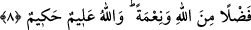

övülmüştür. Onlar ise her duydukları habere itimad etmeyen kâmil kimselerdir. Sevmek,
dostluk göstermektir. Yani onu size güzel göstermiş böylece de îmân sevgisi kalbinize
yerleşmiştir. Bu sebeple bu îmâna layık söz ve fiilleri icra etmiş oldunuz.
Aynu’l-me’ânî’de der ki: “Gönüllerinize” deyip “dillerinize” demeyişinde
Kerrâmiyye’ye; “organlarınıza” demeyişinde ise Şâfiiyye’ye red vardır.
Bu sebeple küfür, fısk ve isyan eseri ortaya çıkabilecek hayırsız, imana lâyık olmayan
davranışlardan uzak durdunuz. Burada ‘çirkin göstermek’ ile ‘buğzettirmek’ aynı mânâya
gelir. Buğz, sevginin zıddıdır. Buğz, nefsin sevmediği bir şeyden nefret edip
uzaklaşmasıdır. Sevgi nefsin rağbet ettiği bir şeye cezb olunmasıdır. ‘Sevdirme’ ve
‘nefret ettirme’de muhabbet ve nefretin birtakım kimselere ulaştırılıp onlarda nihayet
bulması mânâsı olduğu için bir şeyin bitiş noktasını gösteren ve intihâ için olduğunu
bildiğimiz Türkçe karşılığı -e, -a olan (
) harf-i cerri kullanılmıştır.
Fethu’r-rahmân’da şöyle der: Allah’ın sevdirmesi ve nefret ettirmesi, tevfîkiyle lütuf
ve imdâd etmesidir. Küfür, inkâr ile Allah’ın nimetlerinin üzerini örtmektir. Fâsıklık,
kendi nefsine zulüm ve isyân ederek adâletten ayrılmak, boyun eğmeyi kabul etmemektir.
Bütün günahları şâmildir. Fâsıklık büyük günahlara hastır.
Hakk’a ulaştıran doğru yolu tutmuş olanlar “fakat” ifâdesinden sonraki fiillere
mazhar olan kimselerdir. Ebu’l-Leys der ki: Âyette udûl ve telvîn vardır. Şöyle ki,
âyetin ilk kısmı muhatap sigasıyla sonu ise gaib sigasıyla gelmiştir. “Doğru yolda
olanlar bunlardır” denilmiş ve hâli böyle olan herkesin bu medih çerçevesine gireceği
belirtilmiştir.
8. Bu, Allah’tan bir lütuf ve nimettir. Allah alîmdir, hakîmdir.
Buradaki “Allah’tan bir lütuf ve nimettir” ifadesi, yukarıda geçen ‘sevdirdi’ veya
‘nefret ettirdi’ fiillerinin illetidir. ‘Nimet’ kelimesi ‘nimet vermek’ anlamındadır. “İşte
doğru yolda olanlar bunlardır” ifadesi ise ara cümledir. O nedenle yukarıdaki ifade
“doğru yolda olanlar” (
) kelimesinin illeti olamaz. Çünkü lütufta bulunma
Allah’ın fiili olup, doğru yolda olma (rüşd) ise her ne kadar Allah’ın sevdirmesi ve
nefret ettirmesi sebebiyle oluyorsa da insanlara isnâd edilen onlara âid bir fiildir.
Fâilden maksad fiilin kendisiyle kâim olduğu ve kendisine isnad edildiği kimsedir;
yoksa fiili îcâd eden değildir. Bilindiği gibi ‘doğru yolda bulunma’ insanlar ile kâimdir.
Lütufta bulunma ve nimet verme ise Allah ile kâimdir. Dolayısıyla faillerde birlik
olmadığı için (
) kelimesi, (
) kelimesinin illeti değildir.
“Allah alîmdir, hakîmdir.” Yani ilmi geniştir, müminlerin ahvâlini ve onların içinde
kimin kimden üstün ve ayrıcalıklı olduğunu bilir. Yaptığı her şeyi hikmeti gereğince
yapar.